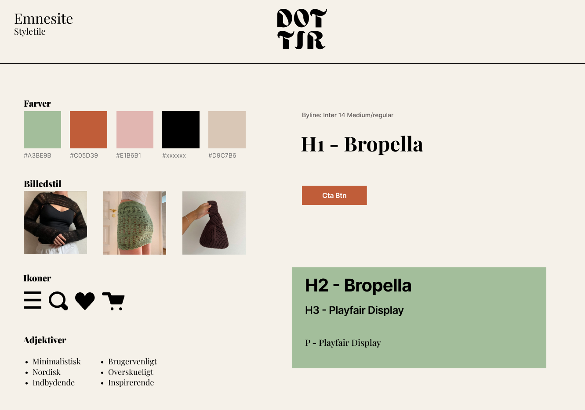

grundlæggende ux/ui
I tema 3 lærte jeg at designe brugervenlige løsninger med fokus på brugerens behov og mål. Jeg blev introduceret til metoder som user stories, brugertyper og researchteknikker som interviews og observationer samt vigtigheden af UX/UI-principper som brugbarhed, troværdighed og tilgængelighed. Jeg arbejdede med designprocesser opdelt i research, design, test og implementering og anvendte værktøjer som skitser, moodboards, styletiles og storyboarding. I opgaven Emnesite, havde jeg for første gang frihed til at vælge et emne og designe et website fra bunden. Jeg skulle selv tage stilling til designkonventioner, gestaltlove og UX/UI-principper for at skabe en brugervenlig og æstetisk løsning. Projektet lærte mig at arbejde struktureret med designprocesser og tage kritiske beslutninger om visuelle og tekniske løsninger.
Emnesite
Jeg lavede interview, observationer og brugertype. Jeg idéudviklede i Figma med mindmaps, moodboards, styletiles, mockups og wireframes. Derefter designede jeg en digital prototype, som jeg testede med brugere. Prototypen blev omsat til et funktionelt, responsivt website ved hjælp af HTML, CSS og JavaScript.
Research og idéudvikling
Mindmap

Brugertype
Interview

Moodboard

Styletile
Wireframe

Prototype